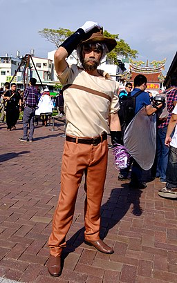

Joseph Joestar
Your next line is: "This is a good resume!"

Source
Qualifications
- I can use the Ripple (referred to as "Hamon" in some dialects)! This is very imporantant under the threat of vampires.
- I can predict what people are going to say next!
- I have perfected the art of the secret Joestar technique of running away!
- I bluffed an all powerful vampire into being launched into space!
- I always find a way to do what other people say is impossible.
These qualifications are why I am, in fact, the best choice for "Chief Execuctive Slacker" at Speedwagon Foundation: